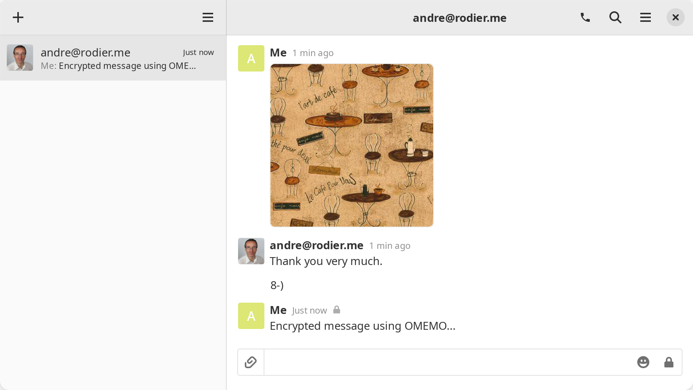
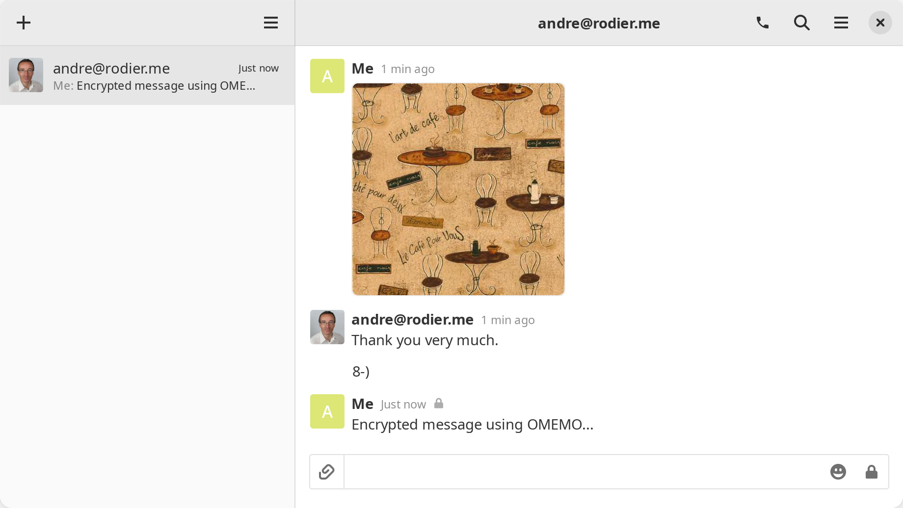
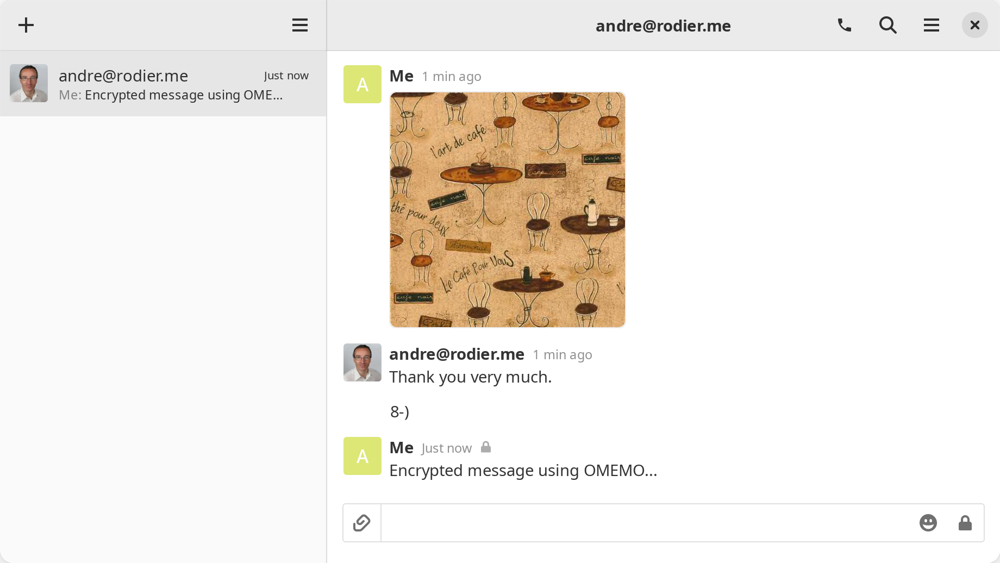

Détection des paramètres avec Dino
Dino IM Instant Messenger est un excellent client Jabber pour l’environnement de bureau Gnome.
Screenshots


 

Un serveur Jabber est installé et configuré et peut être utilisé avec n’importe quel client XMPP. Les fonctionnalités suivantes sont prises en charge et configurées
Dino IM Instant Messenger est un excellent client Jabber pour l’environnement de bureau Gnome.
